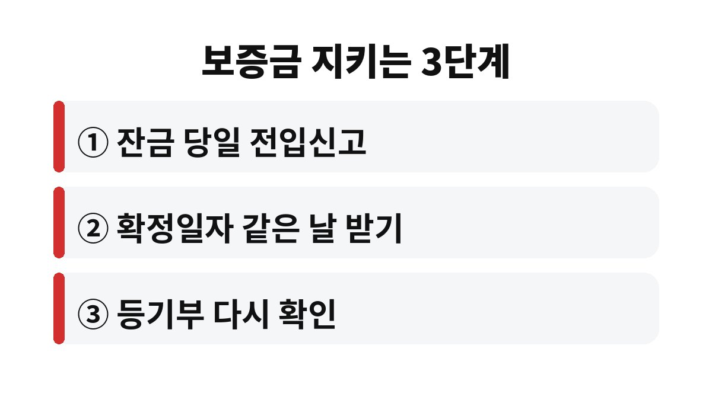
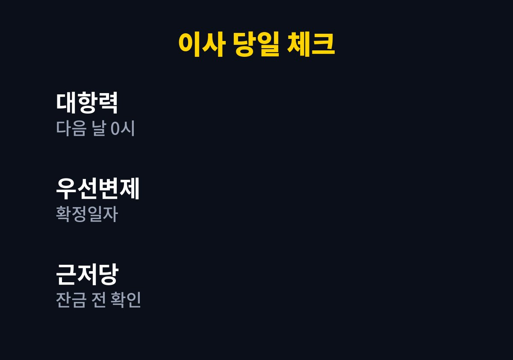

전세 대항력은 이사와 전입신고를 마친 날의 다음 날 0시부터 생기는 것이 원칙이다. 이사 당일 저녁에 집주인이 집을 담보로 대출을 받아도 세입자가 순서에서 밀릴 수 있다는 뜻이다.
이번 주 이사를 앞둔 세입자라면 전입신고만 하면 끝이라고 생각해도 되는지, 하루 차이로 보증금이 흔들리는 상황이 왜 생기는지 끝까지 확인해 볼 필요가 있다.
전세 대항력은 집주인이 바뀌거나 집이 경매로 넘어가도 새 주인에게 "계속 살 권리"를 주장할 수 있는 힘이다. 이 힘은 두 가지 조건이 모두 갖춰져야 생긴다. 하나는 주민센터나 정부24에서 하는 전입신고이고, 다른 하나는 실제로 이사해서 집을 점유하는 것이다.
중요한 점은 효력이 생기는 시점이다. 두 조건을 채운 그날이 아니라 그 다음 날 0시부터 효력이 발생한다. 그래서 이사 당일 하루는 법적으로 아주 약한 상태에 놓인다. 이 하루 동안 집주인이 새로 근저당을 설정하면 그 채권자가 세입자보다 앞서게 될 수 있다.
대항력과 확정일자는 비슷해 보이지만 역할이 다르다. 대항력이 "계속 거주할 권리"라면 확정일자는 "경매 대금에서 보증금을 돌려받는 순서"를 정해 주는 장치다. 확정일자를 받으면 우선변제권이 생기는데, 이 순서는 대항력 요건과 확정일자 중 늦은 날을 기준으로 정해진다.
그래서 전입신고만 하고 확정일자를 미루면 순서가 그만큼 뒤로 밀린다. 계약서를 들고 가는 김에 같은 날 한 번에 받아 두는 것이 가장 안전하다. 확정일자는 주민센터 방문이나 인터넷 등기소, 정부24 등에서 받을 수 있고 수수료도 크지 않은 편이다.

가장 먼저 할 일은 잔금을 치르기 전에 등기부등본을 다시 떼어 보는 것이다. 계약할 때 깨끗했던 등기부가 잔금일에도 같다는 보장은 없다. 그 사이에 근저당이나 가압류가 새로 생겼는지 직접 눈으로 확인해야 한다.
두 번째는 잔금과 동시에 전입신고와 확정일자를 처리하는 것이다. 이삿짐을 옮기고 나서 며칠 뒤에 하겠다는 생각이 가장 위험하다. 세 번째는 계약서에 "잔금일 다음 날까지 새로운 담보 설정을 하지 않는다"는 특약을 넣어 두는 것이다. 이런 문구는 집주인에게 심리적 부담을 주는 동시에 분쟁이 생겼을 때 중요한 근거가 된다.
대부분의 거래는 아무 일 없이 끝난다. 하지만 집주인의 자금 사정이 좋지 않거나 이미 대출이 많은 집이라면 이야기가 달라진다. 이 경우 대항력이 생기기 전 하루가 가장 취약한 구간이 된다. 세입자가 할 수 있는 일은 집주인의 사정을 의심하는 것이 아니라 절차를 빈틈없이 챙기는 것이다.
또한 보증금이 크다면 전세보증금 반환보증 같은 보험 상품을 이용할 수 있는지도 미리 알아보면 좋다. 가입 조건과 비용은 상품마다 다르므로 보증기관에 직접 확인하는 것이 정확하다. 결국 보증금을 지키는 힘은 순서와 기록에서 나온다.
요점 3줄
① 대항력은 전입신고와 점유를 마친 다음 날 0시부터 생긴다.
② 확정일자는 보증금을 돌려받는 순서를 정한다.
③ 잔금 전 등기부 확인과 당일 전입신고가 기본이다.

이사 날 가장 마음에 걸렸던 부분은 어느 쪽이었는지 댓글로 남겨 주면 좋겠다. 도움이 되었다면 구독도 부탁한다.
※ 일반적인 정보이며 법률 자문이 아니다. 구체적인 사안은 전문가와 상담하기 바란다. 투자 권유가 아니다.